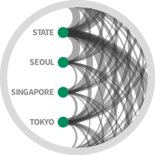

|  |
Historical Event Detection Historians and political scientists commonly read large quantities of text to construct an accurate picture of significant events. Our methods help historians identify possible events from the texts of historical communication.
Detecting and Characterizing Events Who, What, When, Where, and Why? A Computational Approach to Understanding Historical Events Using State Department Cables |
|
Social Poisson Factorization The downside to most algorithmic recommendations is that, for some people, part of the appeal of reading, watching, or consuming other media is in creating shared experiences with friends. We incorporate the ratings of friends (and not just friends' general preferences) in providing personalized recommendations. A Probabilistic Model for Using Social Networks in Personalized Item Recommendation SPF project page (includes code) or SPF code directly on GitHub A Probabilistic Model for Using Social Networks in Personalized Item Recommendation Poisson Trust Factorization for Incorporating Social Networks into Personalized Item Recommendation
Poisson Trust Factorization for Incorporating Social Networks into Personalized Item Recommendation
| |
|
Recommendations for Groups We performed a large-scale study of television viewing habits, focusing on how individuals adapt their preferences when consuming content with others. We constructed a simple model for estimating how individual preferences are combined in group settings.
A Large-scale Exploration of Group Viewing Patterns
Mining Large-scale TV Group Viewing Patterns for Group Recommendation
| |
|
Visualizing Topic Models Topic modeling is a machine learning method that learns underlying themes in a collection of documents, which can be used to summarize and organize the documents. We have created a method for visualizing topic models, allowing users to explore a corpus by navigating between high level topic descriptions and individual documents, hopefully deepening their understanding of the corpus.
Visualizing Topic Models
|